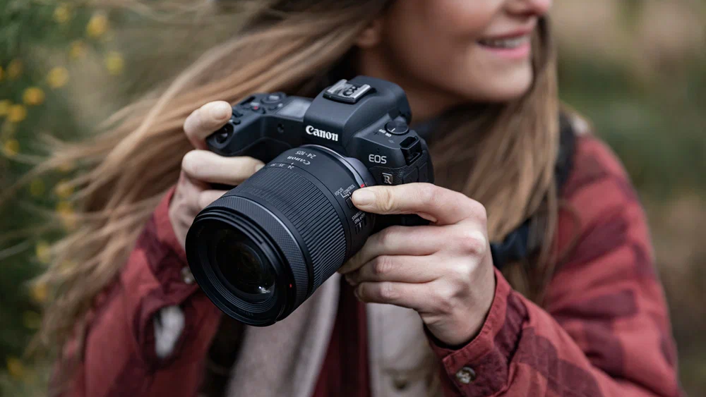
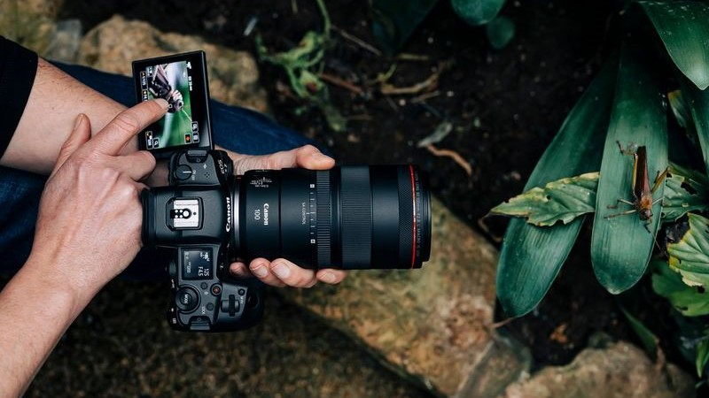
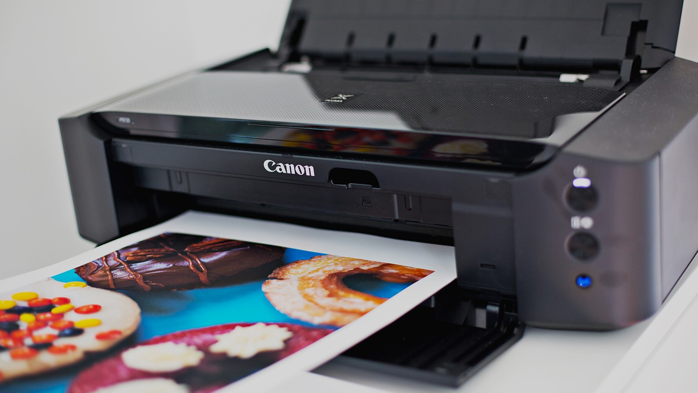
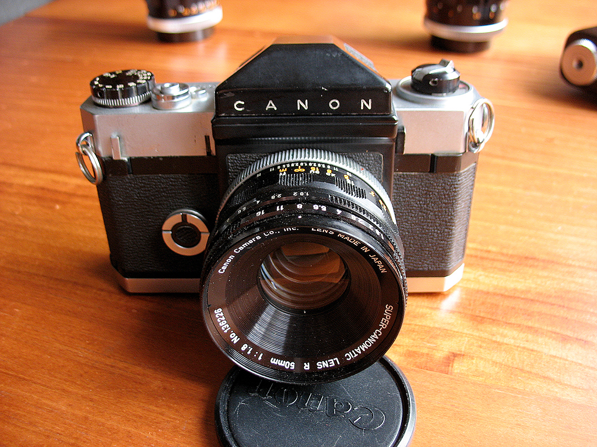
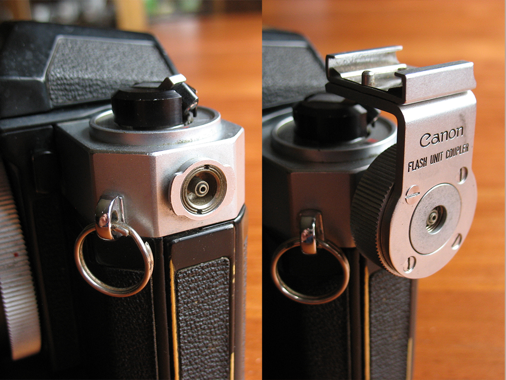
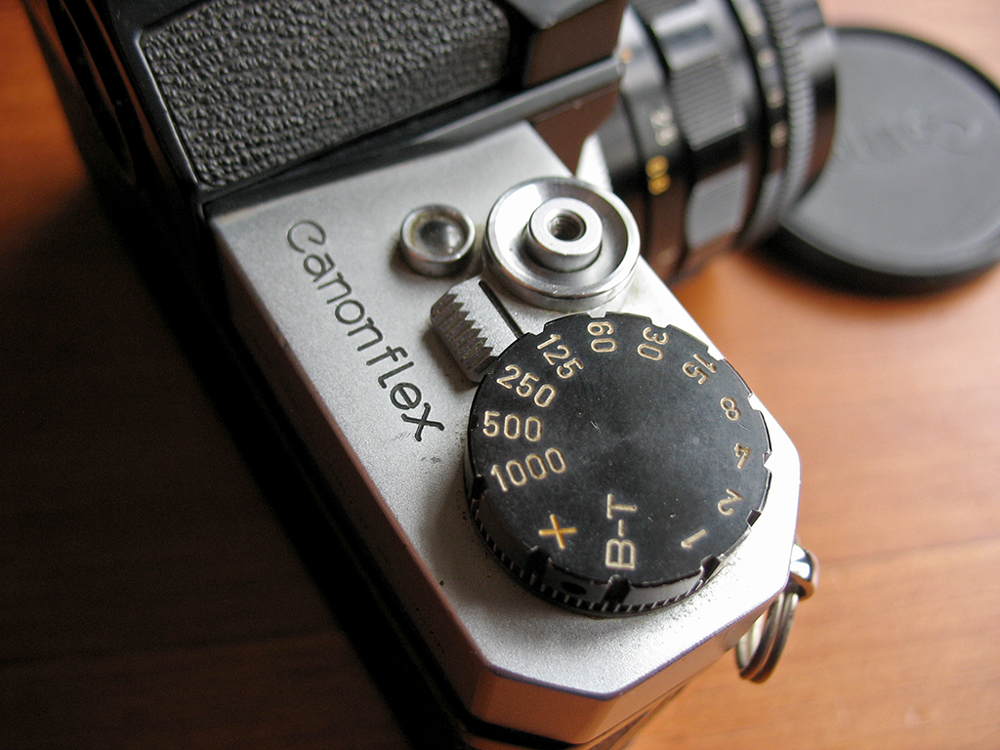

Canon - это японская ведущая технологическая компания, основанная в 1937 году, которая стремится помочь людям переосмыслить и расширить границы возможного благодаря изображениям.

«С камерами в правой руке и оргтехникой – в левой»
Оригинальный слоган компании

Зеркальные и беззеркальные камеры
Запечатли самые удивительные моменты природы!

Высококачественная печать
Воплоти свои креативные проекты в жизнь!
Сегодня мегакорпорация Canon — это прежде всего производитель офисной техники: от принтеров и факсов до сканеров и копиров. Фототехника занимает лишь небольшой процент всего объема выпускаемых фирмой устройств. Что, впрочем, не мешает ей быть самой популярной в мире. Ведь начинала компания именно с разработки фотокамер, став пионером японской фотоиндустрии.
Создатели
Горо Йошидо
Сабуро Учида
Такео Маэда
Такеши Митараи
История развития бренда
Свыше 80 лет, а именно в 1937 году, была основана лаборатория точных оптических приборов под руководством Сабуро Утида и Горо Ёсида, которая поначалу специализировалась на выпуске и развитии фотокамер. Спустя 2 года была зарегистрирована торговая марка Canon, но в название компании она попала лишь в 1947 году.
В 1950-1955 Canon начала выходить на американский рынок, а уже в 1956 представила миру свою первую кинокамеру, которая стала популярна во всём мире. Первая зеркальная камера появилась в 1959 году — любительская Canon Flex.



60-е годы прошлого столетия стали переломным моментом в истории компании. Именно в тот период она решила расширить сферу своего мирового влияния, начав осваивать рынок электроники и офисной техники. Первой разработкой компании в этой области стала копировальная машина Canofax 1000 в 1965 году. А на свое 30-летие компания объявила вызов: «Фотокамеры в правой руке, бизнес-машины в левой», заявив тем самым, что не собирается останавливаться на достигнутом и будет развивать направление офисной техники.
Первой зеркальной плёночной камерой Canon для профессионалов стала Canon F-1. Её несколько раз обновляли и усовершенствовали в 1972, 1976 и 1982 годах. Необычность фотоаппарата в том, что он разбирался практически полностью, благодаря чему его можно было модифицировать под разные задачи.
В 1989 году вышел профессиональный Canon EOS-1, который становится невероятно популярным у профессиональных репортёров. Настолько, что профессионалы начали переходить с Nikon на Canon. Но это всё ещё плёночные камеры.
Первая цифровая камера у них вышла в 1986 году Canon RC-701. Она выдавала не очень хорошее качество, но была популярна у журналистов, ведь позволяла передавать изображения по телефонным сетям без печати. Полноценная профессиональная зеркальная камера вышла у Canon только в 1995 году в коллаборации с Kodak.
Современная линейка фотоаппаратов Canon
В настоящее время камеры Canon делятся на три вида:
1. Беззеркальные фотоаппараты.
Компактные камеры, рассчитанные на широкую аудиторию от любителей до профессионалов, от фотографов до блогеров. Хороши тем, что гораздо меньше и легче, чем зеркалки. Их удобнее брать с собой. Минус в том, что они дороже зеркальных аналогов, быстрее разряжаются, линейка объективов меньше и стоит дороже.
2. Цифровые зеркальные фотоаппараты.
Классическая нестареющая классика, принёсшая Canon известность. Бренд не раз совершал прорывы, становясь первым в индустрии именно при работе с зеркальными камерами. Многое, в том числе и оптика для беззеркалок, выпускается годами, не теряя популярности. Например, легендарный Canon 5D Mark II, на который даже снимали «Мстителей»
3. Компактные цифровые фотоаппараты.
Любительский сегмент лёгких небольших фотоаппаратов. Они достаточно бюджетные, с несменной оптикой. Их можно брать в путешествия, снимать памятные домашние мероприятия. Отличный выбор для любителей и профи, которые хотят просто пофотографировать в своё удовольствие, забыв ненадолго о пятикилограммовой сумке с объективами, светом и штативами.